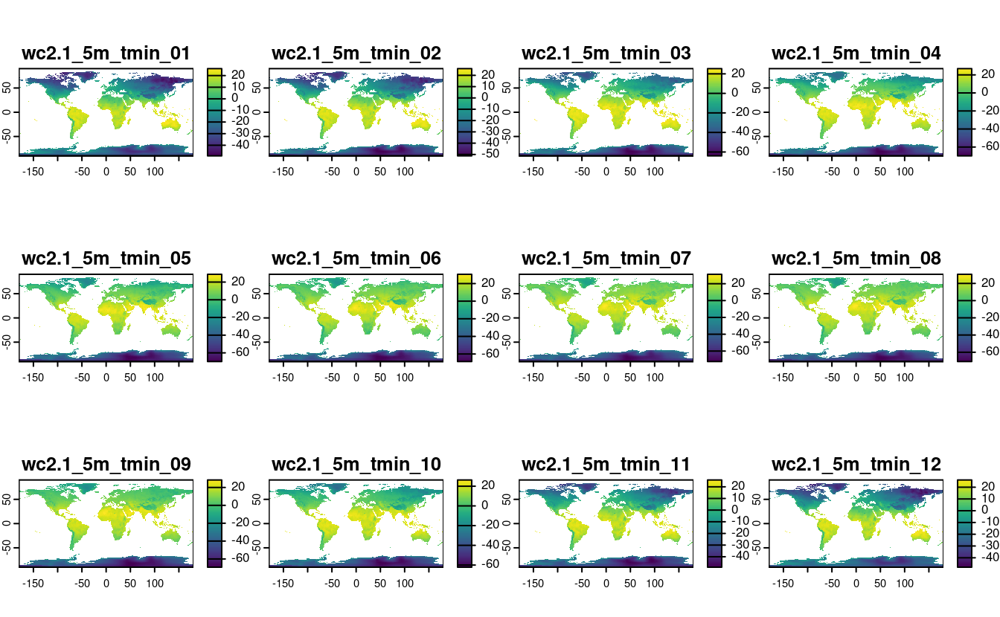

8 Geographic data I/O
#> Linking to GEOS 3.8.0, GDAL 3.0.4, PROJ 6.3.1; sf_use_s2() is TRUE
#> terra 1.6.17
library(sf)
library(terra)E1. List and describe three types of vector, raster, and geodatabase formats.
Vector formats: Shapefile (old format supported by many programs), GeoPackage (more recent format with better support of attribute data) and GeoJSON (common format for web mapping).
Raster formats: GeoTiff, Arc ASCII, R-raster (see book for descriptions).
Database formats: PostGIS, SQLite, FileGDB (see book for details).
E2. Name at least two differences between the sf functions read_sf() and st_read().
st_read() prints outputs and keeps strings as text strings (st_read() creates factors). This can be seen from the source code of read_sf(), which show’s it wraps st_read():
read_sf
#> function (..., quiet = TRUE, stringsAsFactors = FALSE, as_tibble = TRUE)
#> {
#> st_read(..., quiet = quiet, stringsAsFactors = stringsAsFactors,
#> as_tibble = as_tibble)
#> }
#> <bytecode: 0x55cd6a186418>
#> <environment: namespace:sf>E3. Read the cycle_hire_xy.csv file from the spData package as a spatial object (Hint: it is located in the misc folder).
What is a geometry type of the loaded object?
c_h = read.csv(system.file("misc/cycle_hire_xy.csv", package = "spData")) |>
st_as_sf(coords = c("X", "Y"))
c_h
#> Simple feature collection with 742 features and 5 fields
#> Geometry type: POINT
#> Dimension: XY
#> Bounding box: xmin: -0.237 ymin: 51.5 xmax: -0.00228 ymax: 51.5
#> CRS: NA
#> First 10 features:
#> id name area nbikes nempty geometry
#> 1 1 River Street Clerkenwell 4 14 POINT (-0.11 51.5)
#> 2 2 Phillimore Gardens Kensington 2 34 POINT (-0.198 51.5)
#> 3 3 Christopher Street Liverpool Street 0 32 POINT (-0.0846 51.5)
#> 4 4 St. Chad's Street King's Cross 4 19 POINT (-0.121 51.5)
#> 5 5 Sedding Street Sloane Square 15 12 POINT (-0.157 51.5)
#> 6 6 Broadcasting House Marylebone 0 18 POINT (-0.144 51.5)
#> 7 7 Charlbert Street St. John's Wood 15 0 POINT (-0.168 51.5)
#> 8 8 Lodge Road St. John's Wood 5 13 POINT (-0.17 51.5)
#> 9 9 New Globe Walk Bankside 3 16 POINT (-0.0964 51.5)
#> 10 10 Park Street Bankside 1 17 POINT (-0.0928 51.5)E4. Download the borders of Germany using rnaturalearth, and create a new object called germany_borders.
Write this new object to a file of the GeoPackage format.
library(rnaturalearth)
germany_borders = ne_countries(country = "Germany", returnclass = "sf")
plot(germany_borders)
#> Warning: plotting the first 10 out of 63 attributes; use max.plot = 63 to plot
#> all
st_write(germany_borders, "germany_borders.gpkg")
#> Writing layer `germany_borders' to data source
#> `germany_borders.gpkg' using driver `GPKG'
#> Writing 1 features with 63 fields and geometry type Polygon.E5. Download the global monthly minimum temperature with a spatial resolution of five minutes using the geodata package.
Extract the June values, and save them to a file named tmin_june.tif file (hint: use terra::subset()).
library(geodata)
gmmt = worldclim_global(var = "tmin", res = 5, path = tempdir())
names(gmmt)
#> [1] "wc2.1_5m_tmin_01" "wc2.1_5m_tmin_02" "wc2.1_5m_tmin_03" "wc2.1_5m_tmin_04"
#> [5] "wc2.1_5m_tmin_05" "wc2.1_5m_tmin_06" "wc2.1_5m_tmin_07" "wc2.1_5m_tmin_08"
#> [9] "wc2.1_5m_tmin_09" "wc2.1_5m_tmin_10" "wc2.1_5m_tmin_11" "wc2.1_5m_tmin_12"
plot(gmmt)
gmmt_june = terra::subset(gmmt, "wc2.1_5m_tmin_06")
plot(gmmt_june)
writeRaster(gmmt_june, "tmin_june.tif")
E6. Create a static map of Germany’s borders, and save it to a PNG file.
png(filename = "germany.png", width = 350, height = 500)
plot(st_geometry(germany_borders), axes = TRUE, graticule = TRUE)
dev.off()
#> png
#> 2E7. Create an interactive map using data from the cycle_hire_xy.csv file.
Export this map to a file called cycle_hire.html.